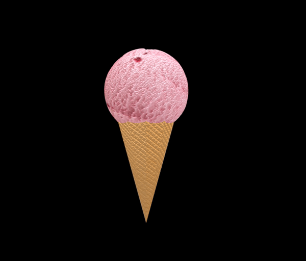
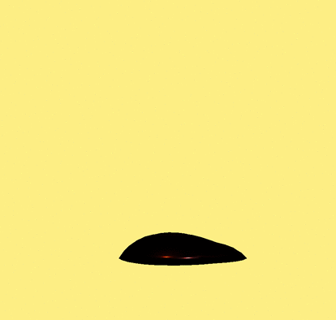
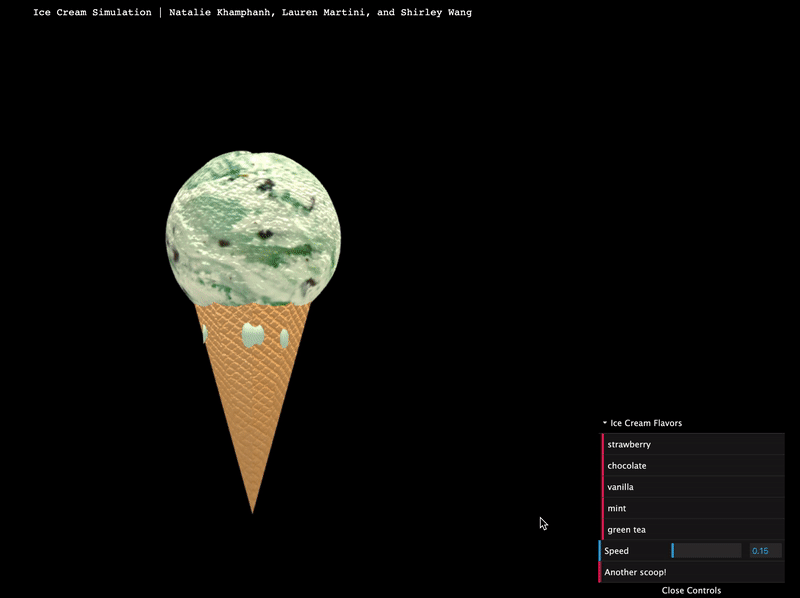

Abstract
Our Proposal
Our team desired to create an ice cream melting simulator that incorporated concepts from this course, such as texture mapping, shaders, and mesh manipulation. We utilized WebGL and a complementary library, THREE.js, to construct our simulator. We built upon vertex manipulation techniques to simulate a melting scoop, while metaballs were transformed to create a dripping effect. Texture mapping was used to add dimension and more realism to the ice cream simulated. Lastly, we built a GUI that would allow for users to manipulate the texture of the ice cream by toggling between different flavors and control the melting speed of our ice cream.
Technical Approach
Background
A prominent motivation to create a simulator was that there are not many melting simulators, let alone ones of ice cream. We wanted to challenge ourselves and create our own melting simulator and experiment with texture mappings. A fun fact is that we all really love ice cream, so we thought it'd be a great outlet to expand on our favorite dessert!
Brainstorming
During our brainstorming stage, we had an abundance of creative ideas. We did a lot of research on the chemistry of ice cream, particle simulations, and melting techinques used in graphics. A few of the resources we analyzed during our brainstorming stage can be accessed here.
Initial Plan
Our goal was to cleanly simulate a solid ice cream melting as there are not a ton of realistic ice cream simulators. We decided to use Javascript and WebGL to push ourselves out of our comfort zones.
Our original idea for creating an ice cream simulator was to implement a particle system using C++ and OpenGL, in which small spherical particles would blend and condense to form a large scoop of ice cream. Overtime, the particles would move such that some would cave inwards into the sphere, while others would drip off onto the cone and onto the ground. We wanted to create our own ice cream meshes and integrate the chemistry of ice cream along with an element of heat, such that the ice cream would melt or distort according to the physics of its surrounding environment. Additionally, we planned to add extra objects into the scene, such as toppings, which would also melt under the effects of heat. This proved to be too intensive for the scope and deadline of the class, and we thus decided to scale back a bit. After feedback from our TA, we toned down our goals list and redirected our focus to solely melting a scoop of ice cream artistically.
Milestone Implementation
During our first implementation, we attempted to create a particle system, in which smaller spherical meshes would blend and makeup a larger sphere mesh - the ice cream scoop. On our first pass, we got textures mapped to the ice cream sphere and cone and were able to apply a displacement map to both as well. We also got a simple simulation of particles dripping from the ice cream.
However, we struggled a lot with sketching out how to organize the different nuances of the particles - for instance, how to mathematically determine and delegate which particles would move in what direction, and at which point in time. This approach grew to be more complicated than we anticipated. After showing our implementation to a TA and discussing future directions, we decided to modulate this overall melting task by breaking it down into two components.
Final Implementation
Moving forward, we worked with the two components: 1.) Illustrating an ice cream scoop melting by applying vertex manipulation on a spherical mesh and 2.) Simulating the dripping effect by using a metaball system, which is esssentially a particle system in which spherical particles blend together into one mesh when they're X distance close to each other.
To achieve these goals, we researched into both vertex and shader deformation, metaballs, and how to create a GUI. Originally, we wanted to create our own GLSL shader that would not only apply a Blinn-Phong texture over the objects in the scene, but also distort the vertices over time. However, we struggled a lot with the syntax in importing GLSL into the Javascript files we had. Alternatively, we moved forward by creating a function that would distort the vertices of the mesh overtime. For the dripping, we discovered that metadrops are a really great way to simulate the liquid motion we were looking for. For a nice final touch, we integrated a user-interactive experience by creating a GUI that would allow the user to toggle between ice cream flavors and control the melting rate of the scoop.
Vertex Manipulation

The method of manipulating vertices of a spherical mesh were used to simulate the "melting" motion of an ice cream scoop. Set on a time loop, vertices of the scoop, which is represented by a sphere mesh, are displaced in the -y direction to simulate a downwards slipping motion and in the +z direction to visualize the scoop caving inwards, for a realistic representation of melting dairy. Light downscaling of the mesh are integrated to ensure that the size of the ice cream scoop decreases overtime. Also, when exposed to heat, we observed in-person that the top of the scoop melts first and faster, as opposed to the bottom of the object. To ensure this element is implemented, vertices of the top of the mesh melt faster than the bottom of the mesh, in a top-down fashion.
Additionally, a Perlin noise function was applied to the sphere mesh. Perlin noise is an algorithm that generates movement similar to white noise and is often used in games or simulations of particles such as smoke. Our design choice in adding this to the cycle of melting was in hopes of adding a subtle touch of life to the ice cream mesh for realism.
Metaballs

Metaballs are created in THREE.js using MarchingCubes.js. Metaballs are organic spheres that interact when close to each other by combining together fluidly. The spheres used to make them are changed in opacity overtime to simulate the sphere changing in shape and space. And the Marching Cubes algorithm was originally created in 1987 by Lorensen and Cline to create a mesh from an isosurface.
Three dimensional metaballs formula (from Wikipedia):

The above is expenisve to compute but the most common one used to create metaballs.
The basic structure of metaballs had the right liquidly look for ice cream drops. However, they do not act like dropping liquid by default. There is no tracking of the previous y to calculate the new position which is what is needed to create the drops we were looking for.
Thus some work needed to be done to transform the standard metaballs to ice cream drops. We changed the sinusoidal functions to update x, y, and z to be one that calculated the new y position from the former based on time. We created previous arrays to store the x, y, and z values for each blob or drop in the metaball. At start, these array were intialized to default values for x, y, and z. With drops, x was generated randomly using Math.random() to ensure they were spread out across the cone more organically. The z position never changed and could stay at zero. Y was the most important coordinate to update and started out at 1, which was the upper bound of the metaball effect generator.
Each update step after the first, y was updated by a random value between 0 and 0.5 multiplied by time. If y was below 0, it was just -0.5 * time to create a melting effect along the ground plane of the simulator.
GUI

The GUI was created using the dat.GUI library. An "Ice Cream Flavors" menu was created that allows for toggling between 5 different ice cream flavors. This was done by creating a function that identifies the toggled flavor and switches the material of the scoop and drip to different textures and colors. In order to avoid having the scoop and drips to appear desaturated, the HSL values of the materials' colors were adjusted within the funciton.
Originally, we wanted to try and implement a temperature slider that would accurately simulate the melting and dripping of the ice cream according to the type of ice cream flavor and the temperature. However, after realizing the amount of time left and how difficult it would be to implement this, we decided to include a "Speed" slider to the GUI. This still allows the user to play around with the rate at which the scoop and drips fall, but less realistically. With the default speed starting at 0.15, the user is able to change the melting and dripping rate between the values 0 to 5 at 0.05 increments.
Lastly, an "Another scoop!" button was added that allows the user to restart the simulation. This was done by creating a restart function that removes the current scoop of ice cream and creates a new sphere geometry to represent the new scoop. The default that it resets to is the mint ice cream.
Conclusion
Future Iterations
As a group, we had a wonderful time working on this project and were really happy with the significant progress we achieved at every stage of our project. However, there are definitely rooms for improvement we have considered and components we plan to refine in future iterations.
1. Create a custom deforming GLSL shader
Implementing a GLSL shader into our WebGL renderer was a goal we had initially set, however we struggled with a lot with intertwining the two platforms and experienced a lot of syntactical issues. In the future, we hope to integrate the Blinn-Phong shader we created in the course project #4. The current shading, Three.JS's default Phong Shader engine, isn’t quite specular enough, so we weren't able to achieve the wet or glossy look that ice cream realistically have. Additionally, this would also be a great method to incorporate our vertex distortion method and expand on it.
2. Implement collisions
At our current implementation, the sphere and cone function independently in the scene. In the future, we hope to implement the impact on both the scoop and cone upon collision. For instance, the ice cream scoop would dip into and drip down the cone. Also, the cone could become soggy overtime and collapse onto the ground from the fluid impacts of the ice cream.
3. Integrate food science
In the future, we really hope to integrate food science - such as the chemistry of ice cream and how its melting rates work alongside temperature.
Problems and Solutions
1. Simulating the scoop mesh to melt realistically. At the point of our final implementation, the scoop mesh distorts such that its vertices displace downwards and inwards on the top. However, by the presentation day, we still struggled to distort the mesh such that the vertices on the top would cave in/downwards along its normal. This method would have eliminated the awkward vertically-diminishing sphere that exists at the moment. We weren't able to figure out how to integrate this but would definitely hope to apply a lot of refinements to this process in future iterations!
2. Getting the drops to match the ice cream scoop. For an unknown reason, when applying the ice cream scoop textures to the drips, the drips would appear black. The only texture that seemed to work was the green tea ice cream texture. Then, there were issues with trying to change the color of this texture, so the drip materials were changed to lambert materials with no texturing. This meant creating separate materials for the drips and adjusting the color and hsl values.
3. Getting the drips to correctly fall: a major rehaul in calculation of metaball creation and updating had to be done to get the correct look. To get them to move correctly, we had to create arrays of previous locations that would be updated in each pass so that the next time step would be based on the previous and the next one on that step and so on. Also, figuring out how to calculate the x position to spread nicely across the top of the metaball effect frame instead of just quickly flashing back and forth.
Lessons Learned
1. New language and tools!
None of us had experience with Javascript or WebGL prior to this project, so implementing this simulator was a new and fun learning experience for all! We worked with C++ and OpenGL throughout the semester and wanted to expand our skillset by equipping ourselves with a new language. We definitely had a fun time and were pleased to explore the nuances of Javascript, HTML, and a complementary Javascript library called Three.JS. Who knew that beautiful scenes could be rendered in such short durations?
2. More experience with textures and shaders
Results
Team Contribution
1. Shirley Wang
I helped research a lot of articles during our brainstorming stage, most of them focusing around concepts of fluid simulation, such as articles about Navier Stokes, or simple implementations of fluid simulation using OpenGL.
Once we were set on the melting simulation, I helped implement many parts of the milestone effort, such as mesh generation, texture mapping/shading and creating the particle system. I struggled a lot with solidifying a set structure for the particle interaction, but was able to properly apply textures, such that at first glance, the scene visibly contains an ice cream object.
Moving forward up to our final implementation, I worked on the vertex manipulation of the scoop from scratch. This effort was achieved through texture mapping and vertex displacement of a spherical mesh.
2. Lauren Martini
Up to the milestone, I worked on trying to get vertex manipulation to work but it ended up pulling down the whole sphere instead of just vertices.
Moving on from that, my main contribution was transforming metaballs from their default form in THREE.js to a drip effect. I started with the MarchingCubes.js made by mrdoob and manipulated the metaballs generated from that to create dripping ice cream.
3. Natalie Khamphanah
For the milestone, I looked into particle systems and how we could use them in order to create the shape of the scoop and simulate dripping. I also worked on the first version of the website for the milestone.
For our final implementation, I helped with fixing the cone texturing. I also implemented the GUI, taking inspiration from the GUI shown in mrdoob's Marching Cubes simulation.
References
Inspiration
Time Lapse of Melting Ice Cream
Early Style Influence
Simulating Blobs of Fluid by Peeke Kuepers
Vertex Manipulation
Metaballs
Marching Cubes Example by mrdoob
Gui
Scientific Papers
Ice Cream Textures and Graphics
Chemistry of Ice Cream Infographic
Creative Commons License for Chemistry of Ice Cream Infographic